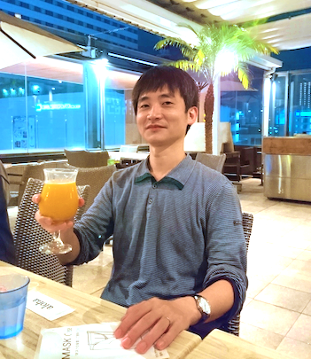

Shota Fujishima
Professor
Graduate School of Economics
Hitotsubashi University
Research Interests
Urban and regional economics, Economics of networks, Applied game theory, Public economics
If you would like to pursue a Ph.D. degree under my supervision, please see here. I do not accept non-degree research students without an endorsement from a known colleague.
Research Papers
I welcome comments. Please see my vita for my email address.
- 2026“Uncovering Functional Blocks in Interregional Production Networks: Evidence from Input-Output Linkages in Japan” (March, 2026).PDF
- 2025“Traditional Community Ties and Young Women’s Out-Migration: A Multiscale Geographically Weighted Regression Analysis,” with Kosuke Shigeno (October, 2025).
- “Quantifying congestion externalities in road networks: A structural estimation approach using stochastic evolutionary model,” with Takara Sakai and Yuki Takayama, RIETI Discussion Paper Series 25-E-055 (June, 2025).Link
- “Exploring Practical Treatment Assignment Rules for Place-Based Policies: A Japanese Case Study,” with Tadao Hoshino and Shinya Sugawara, Journal of Regional Science, 65(5), 1353-1378 (November, 2025).PDF
This paper was originally circulated under the title “Heterogeneous treatment effects of place-based policies: which cities should be targeted?” (RIETI Discussion Paper Series 20-E-036).
- 2024“Identifying sinks and sources of human flows: A new approach to characterizing urban structures,” with Takaaki Aoki and Naoya Fujiwara, Environment and Planning B: Urban Analytics and City Science, 51(2), 419-437 (February, 2024).DOI
- 2023“Equilibrium Dynamics in a Model of Growth and Spatial Agglomeration,” with Daisuke Oyama, Macroeconomic Dynamics, 27(1), 224-249 (January, 2023).DOI
- 2022“Urban spatial structures from human flow by Hodge-Kodaira decomposition,” with Takaaki Aoki and Naoya Fujiwara, Scientific Reports, 12, 11258 (July, 2022).Link
- 2020“The Size Distribution of ‘Cities’ Delineated with a Network Theory-based Method and Mobile Phone GPS Data,” with Naoya Fujiwara, Yuki Akiyama, Ryosuke Shibasaki, and Ritsu Sakuramachi, International Journal of Economic Theory, 16(1), General Equilibrium and Location: A Special Issue in Honor of Marcus Berliant, 38-50 (February, 2020).Link
- 2017“Optimal Income Taxation with a Stationarity Constraint in a Dynamic Stochastic Economy,” with Marcus Berliant, Journal of Public Economic Theory, 19(3), 739-747 (June, 2017).
- “Discrete-Space Agglomeration Model with Social Interactions: Multiplicity, Stability, and Continuous Limit of Equilibria,” with Takashi Akamatsu and Yuki Takayama, Journal of Mathematical Economics, 69, 22-37 (March, 2017).
- 2015“The Emergence of Cooperation through Leadership,” International Journal of Game Theory, 44(1), 17-36 (February, 2015).
- 2013“Growth, Agglomeration, and Urban Congestion,” Journal of Economic Dynamics and Control, 37(6), 1168-1181 (June, 2013).
- “Evolutionary Implementation of Optimal City Size Distributions,” Regional Science and Urban Economics, 43(2), 404-410 (March, 2013).
- 2011“The Welfare Effects of Cordon Pricing and Area Pricing: Simulation with a Multi-regional General Equilibrium Model,” Journal of Transport Economics and Policy, 45(3), 481-504 (September, 2011).Full version with appendices (PDF)
Please see here for my publications in Japanese.
Work in Progress
- 2025“From Aggregate Observations to Social Optimum: An Adaptive Pricing Scheme in Heterogeneous Congestion Games” (April, 2025).PDF
- 2023“A quantitative urban model with traffic congestion,” with Tatsuya Sugimoto, Satoshi Sugiura, and Yuki Takayama (May, 2023).
- 2022“Subsidized Closures in Nightlife Districts during the Pandemic: Evidence from Smartphone Data,” with Yaxi Jiang, Shuhei Kitamura, Yoichi Sugita, and Hidenori Takahashi (September, 2022).
Conference Proceedings
- 2015“Communities in an Inter-firm Network and their Geographical Perspectives,” with Ritsu Sakuramachi, Naoya Fujiwara, Yuki Akiyama, and Ryosuke Shibasaki, Proceedings of the 14th International Conference on Computers in Urban Planning and Urban Management, 371: 1-17 (July, 2015).PDF
Conference Presentations
- Asian Seminar in Regional Science (×3), University of Tsukuba (October, 2020); Seoul National University, South Korea (August, 2014); National Dong Hwa University, Taiwan (August, 2013).
- UEA Meeting (×2), The Federal Reserve Bank of Philadelphia, USA (October, 2019); Hilton Portland Hotel, USA (November, 2015).
- UEA European Meeting, The Kraks Fond - Institute for Urban Economic Research, Denmark (May, 2017).
- ES World Congress, Montreal Convention Center, Canada (August, 2015).
- APET Meeting (×2), University of Washington, USA (July, 2014); Academia Sinica, Taiwan (June, 2012).
- ES Asian Meeting, Academia Sinica, Taiwan (June, 2014).
- NARSC Meeting, Grand Hyatt Atlanta, USA (November, 2013).
- SEA Meeting, Sheraton New Orleans Hotel, USA (November, 2012).
- Midwest Economic Theory Conference (×2), Washington University in St. Louis, USA (October, 2012); Indiana University Bloomington, USA (May, 2012).
- EconCon, Princeton University, USA (August, 2012).
Links
- My GitHub Page
- Graduate School of Economics / Faculty of Economics, Hitotsubashi University
- Center for Urban and Real Estate Studies (CURES), Hitotsubashi University
- School of Management, Tokyo University of Science
- Center for Spatial Information Science, The University of Tokyo
- Department of Economics, Washington University in St. Louis
- McDonnell International Scholars Academy, Washington University in St. Louis